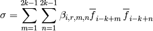

PyWENO smoothness indicators.
Compute smoothness indicator coefficients and store result in beta.
Arguments:
- smoothness - smoothness indicator type
- grid - grid (can be unstructured)
- k - order
In general, the smoothness indicator sigma for the cell i and stencil with left shift r is of the form

The smoothness indicator type can be one of:
- 'jiang_shu'